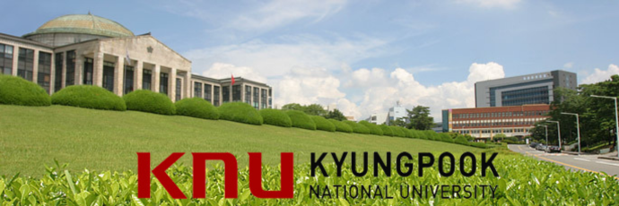
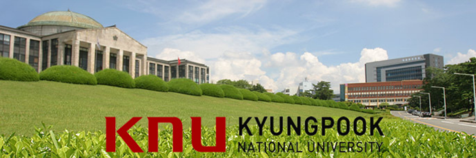

ADRIEN RAVEL
ADRIEN RAVEL

Education
2019 - 2024: ECE Engineering School - Major in Embedded Systems
I followed the integrated preparatory program at ECE, which allowed me to acquire skills in the field of digital technology. At the same time, I specialized in M1 and M2 in the Embedded Systems major. My education combines theory with practice, with particular emphasis on practical laboratory work and numerous projects.
2022: Kyungpook National University
I spent a semester studying abroad at Kyungpook National University (경북대학교) in South Korea. During my exchange, I took courses in electronics, specifically focusing on artificial intelligence, operating systems, network programming, and signal processing. Additionally, I had the opportunity to start learning the Korean language.
2022: Handimanagement training by "Companieros"
Thanks to this training, I have also developed managerial skills, enabling me to supervise and coordinate diversified teams. I have gained a strong ability to lead and communicate effectively.
2019: Baccalaureate in Science (with honors)
I obtained my scientific baccalaureate at high school with mention.
 
